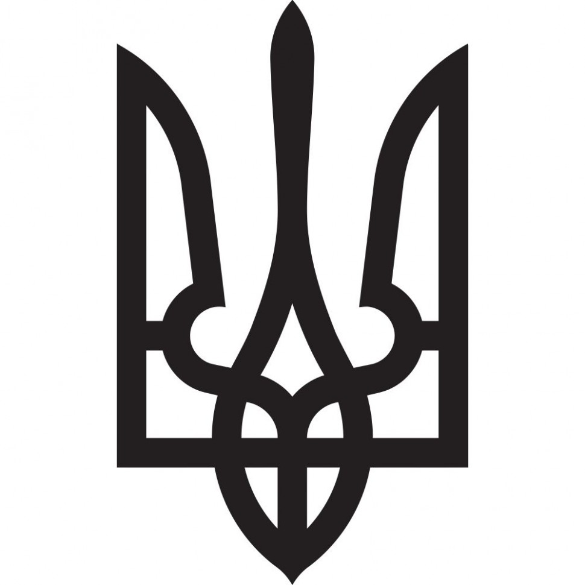
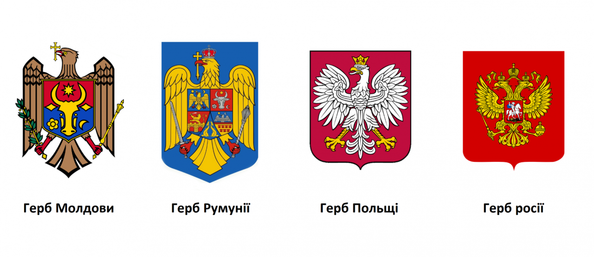
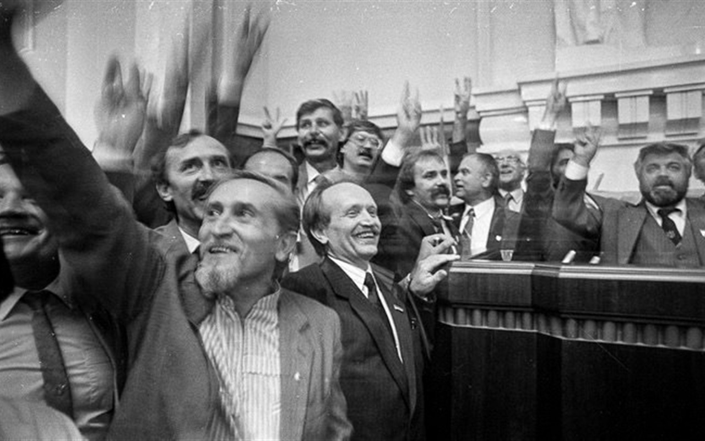
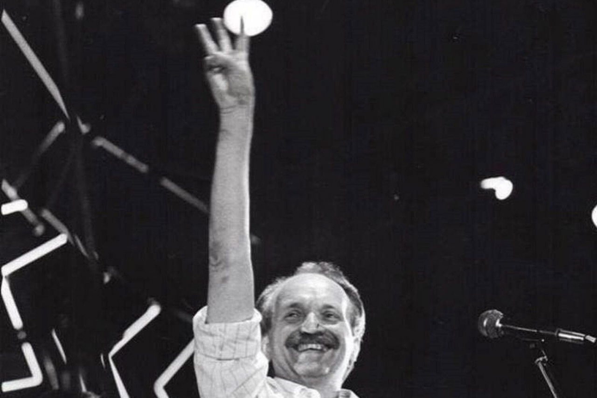
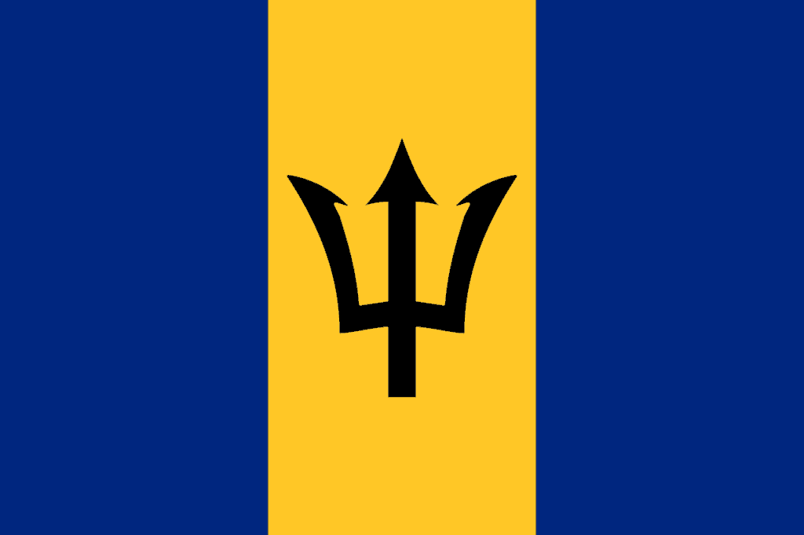
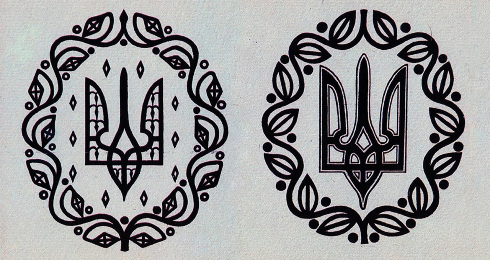
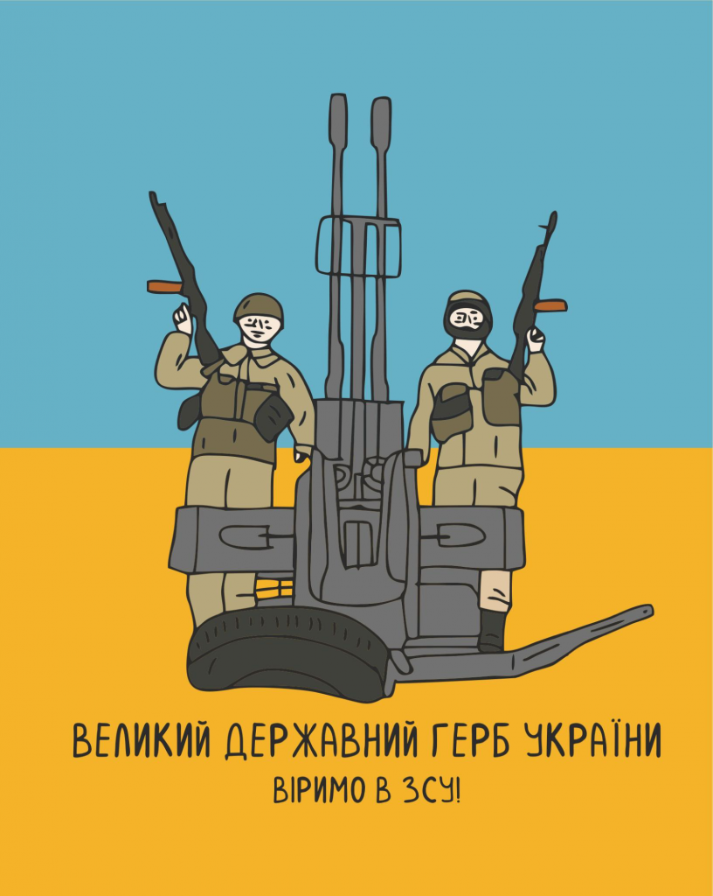
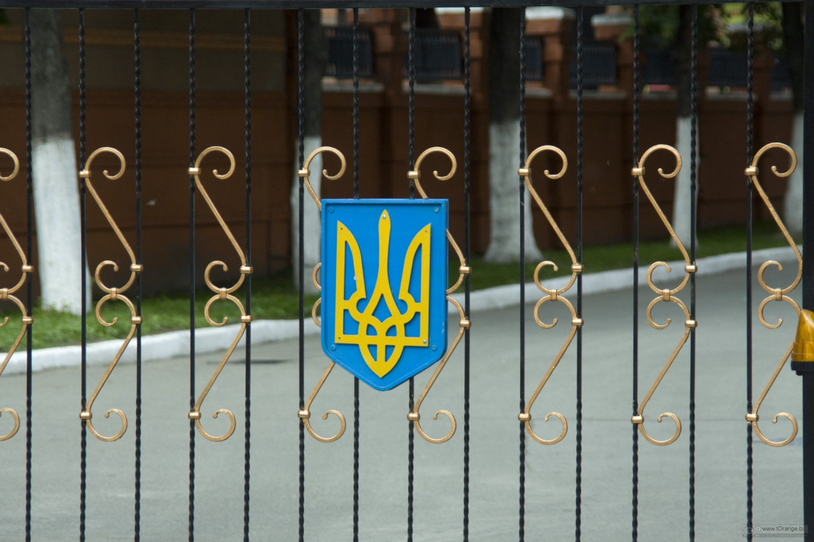
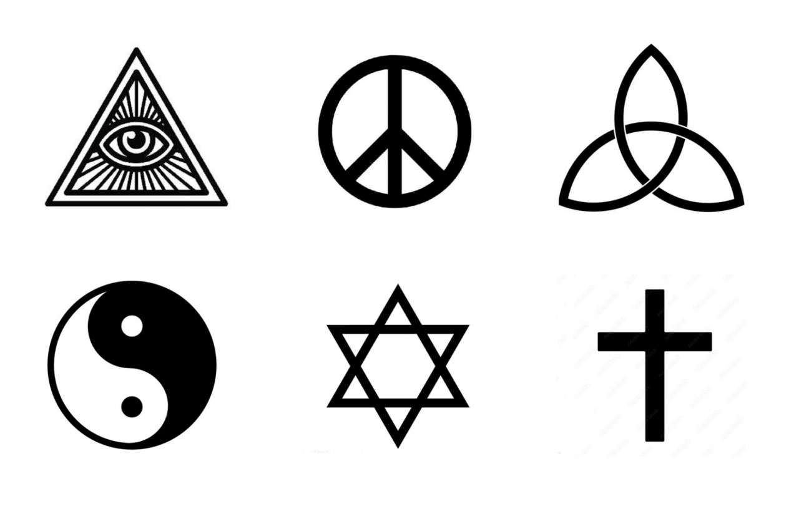
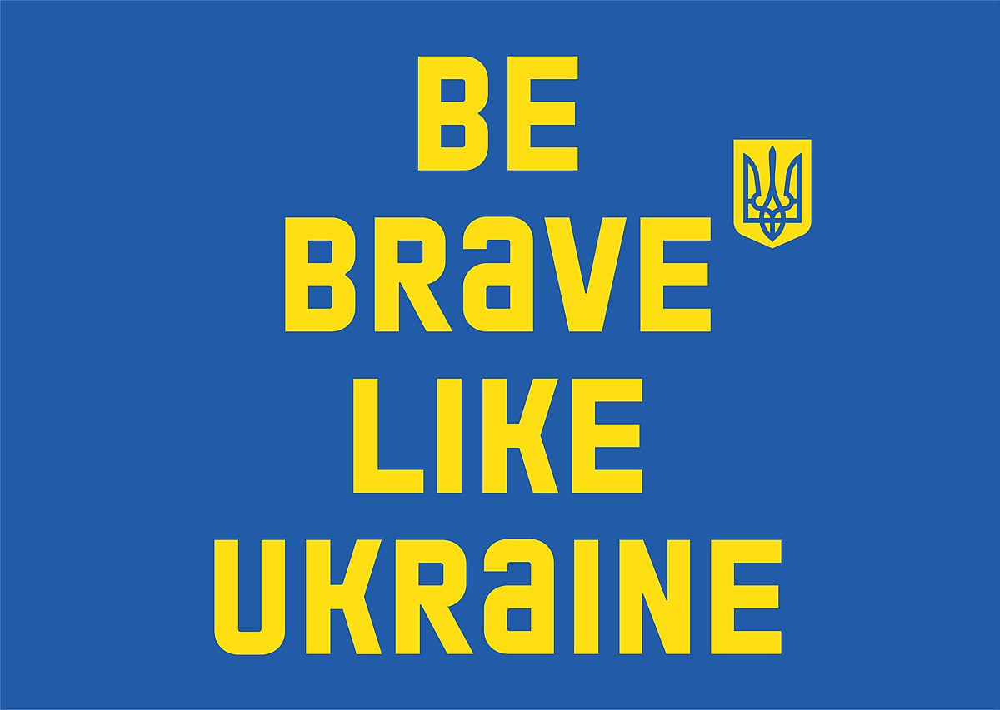

Зміст:
Секрет успіху Тризуба
За що дизайнери люблять герб України
Українські державні символи набувають нового історичного контексту — сьогодні неймовірна кількість людей згуртувалася у підтримці України, і всі ми вкотре об’єднані під спільними знаменами.
Самобутній, але не єдиний
Пропонуємо поміркувати про успіх Тризуба з дизайнерської точки зору. Нас цікавить саме державний герб, адже прапор України має класичний, як для стяга, дизайн, проте український Тризуб відразу впадає в око, бо не схожий на типову геральдику наших сусідів.
Щоправда, є нюанс — далеко не завжди геральдика країн відповідає принципам «хорошого логотипу», адже історично вона призначена для дещо інших цілей. В Україні ж склалося так, що після проголошення Незалежності герб здобув велику вагу в суспільно-політичному житті країни, а також прославився як досконалий символ: впізнаваний, емоційний, зухвалий і досить простий, адже його можна показати навіть трьома пальцями.
Світлина: Олександр Клименко
Світлина: Центр дослідження визвольного руху
Ви напевно чули різноманітні версії походження самого знаку Тризуба, тому ми пропонуємо оминути історії сивої давнини. Натомість хочемо дізнатися, завдяки яким характеристикам Тризуб сягнув успіху та в чому полягає його унікальна роль у дизайн-системі країни. Між іншим, побачити тризуб можна навіть у територіально віддалених культурах.
Прапор Барбадосу
Простір для тлумачення
Зазирнемо одразу у 20 століття — Тризуб не мав єдиного правильного трактування і за часів Української Народної Республіки, але він зумів стати універсальним символом, який об’єднав українців. Це сталося завдяки тому, що значення символу, хоча дійсно походить з давніх часів, водночас є гнучким, здатним до актуалізації.
Навіть сам Михайло Грушевський — людина, завдяки рішенню якої ми маємо цей надзвичайно стильний державний герб, не був впевнений у тому, що ж символізує Тризуб.
Ескізи герба УНР від Василя Кричевського, 1918 рік
Варто згадки й те, що художник Василь Кричевський, чия ітерація Тризуба 1918 року стала прототипом нашого сучасного герба, зазнавав критики від своїх колег. Особливо з боку Георгія Нарбута, який обурювався через надмірне прикрашальництво в ескізах Кричевського і взявся допрацьовувати Тризуб.
Читайте також: Українські митці 20 століття, яких росія намагалася знищити
«Логотипізація» Тризуба?
Оскільки в новітній історії України Тризуб вийшов за межі суто державного користування і став «народним» символом, люди власноруч відтворюють його на численних носіях, переосмислюють, по-різному інтерпретують дизайн. Внаслідок цього Тризуб набув варіативності, деінде його стали використовувати як елемент композиції або навіть прикрасу.
Ілюстрація: Олександр Грехов
Можна сперечатися про те, чи варто, скажімо, маркувати державними символами предмети, не пов’язані з діяльністю держави, проте цей процес відбувається вже багато років природним чином. Через що деякі дизайнери пропонують взяти справу у свої руки та впорядкувати так звану «логотипізацію» Тризуба.
Цього року співзасновник асоціації Design4Ukraine Ярослав Белінський закликав створити нову дизайн-систему України, центральне місце в якій посідатиме саме Тризуб як універсальний знак для всього, що вироблено в Україні. Це спричинило бурхливі дискусії у спільноті креативників щодо того, де пролягає межа між доречним використанням державного герба та несмаком.
Читайте також: Бути чи не бути новій дизайн-системі України?
Свобода повинна мати стиль
Символи вочевидь мають потужну комунікаційну функцію, особливо у взаємодії з масовою аудиторією. Найвідомішим у світі символам притаманні такі риси: інтуїтивність у поєднанні з загадковістю, впізнаваність, лаконічність, легкість відтворення. Переважна більшість з них настільки прості, що їх без труднощів може намалювати дитина, проте наявна також і глибина, яка чіпляє увагу.
Тризуб став настільки поширеним у повсякденні українців, що здається, ніби популярність державної геральдики є звичною справою у житті людини. Насправді ж, це велика вдача — мати потужний герб, з дизайнерською елегантністю і лаконічністю якого може позмагатися в Європі хіба що герб Швейцарії. Останній, втім, виражає значно менше войовничості.
Варто згадати і неприємну історію з інстаграмом — кілька місяців тому соцмережа раптово стала блокувати світлини з Тризубом, що спричинило справедливе обурення серед українців. Офіційне пояснення від Meta не було оприлюднено, але ймовірно, проблема полягала чи то у численних скаргах російських користувачів, чи то в упередженій модерації. В будь-якому разі Тризуб знову довів, що він є вкрай потужним символом, який продовжує дошкуляти ворогам України одним лише своїм виглядом.
Сьогодні Тризуб став майже таким же впізнаваним у світі, як і прапор України. До того ж наша держава дедалі частіше використовує Тризуб у візуальних комунікаціях, спрямованих на закордон, адже для багатьох іноземців цей символ асоціюється з українською незламністю та жагою до свободи.
